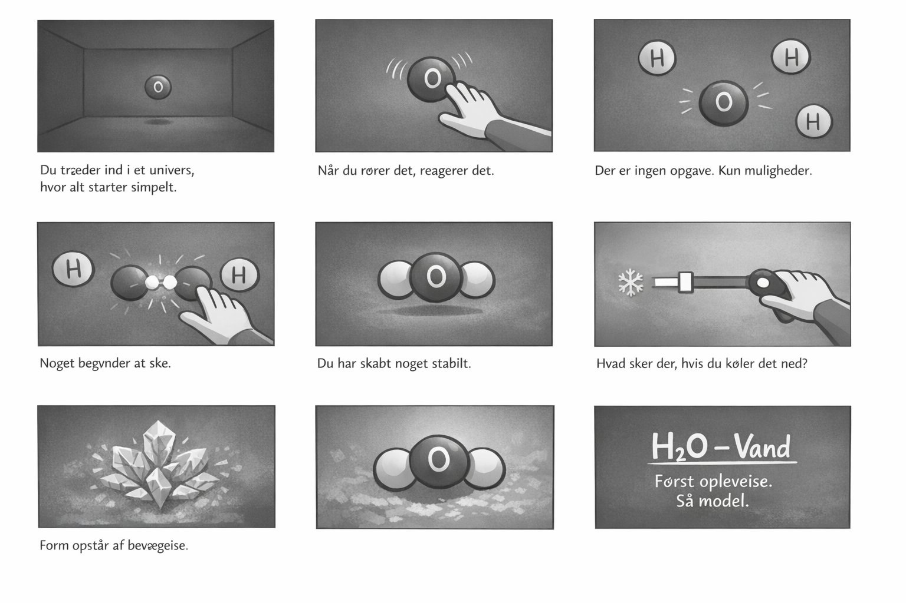
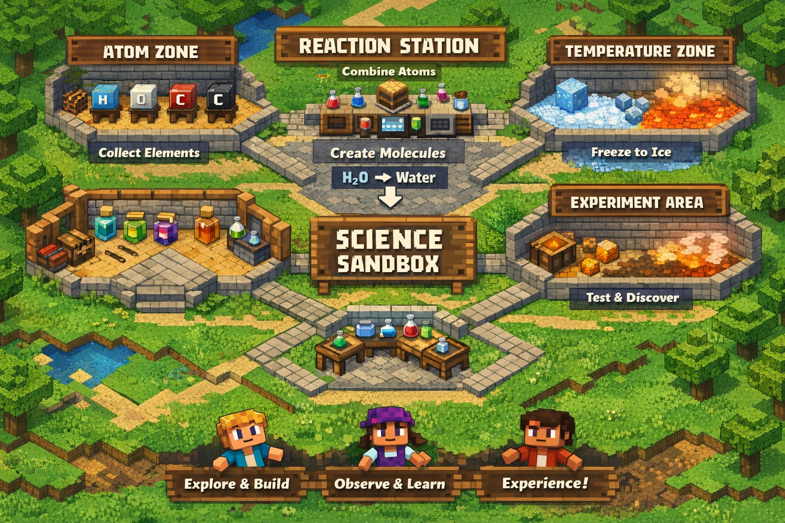

Læring gennem oplevelse, eksperimenter og visuelle modeller.
Lærings-uniVRs er et læringsprojekt, hvor børn og unge kan opleve naturvidenskab i stedet for kun at læse om det.
Fokus er på nysgerrighed, sansning og undersøgelse — så abstrakte fænomener bliver lettere at forstå gennem oplevelse.

Først oplevelse. Så interaktion. Så model. Målet er at lade forståelsen vokse gennem det, eleven selv gør og opdager.

En tidlig pilot kan bygges i eksisterende miljøer, hvor elever kan samle elementer, skabe molekyler og undersøge naturvidenskab aktivt.
Udforsk kemi og fysik uden risiko, og prøv ting af flere gange uden at miste modet.
Visualisér processer, kræfter og sammenhænge, som normalt er svære at forestille sig.
Gør læring mere aktiv, mere undersøgende og mere motiverende for forskellige typer elever.
"Projektet søger samarbejdspartnere og pilotforløb"